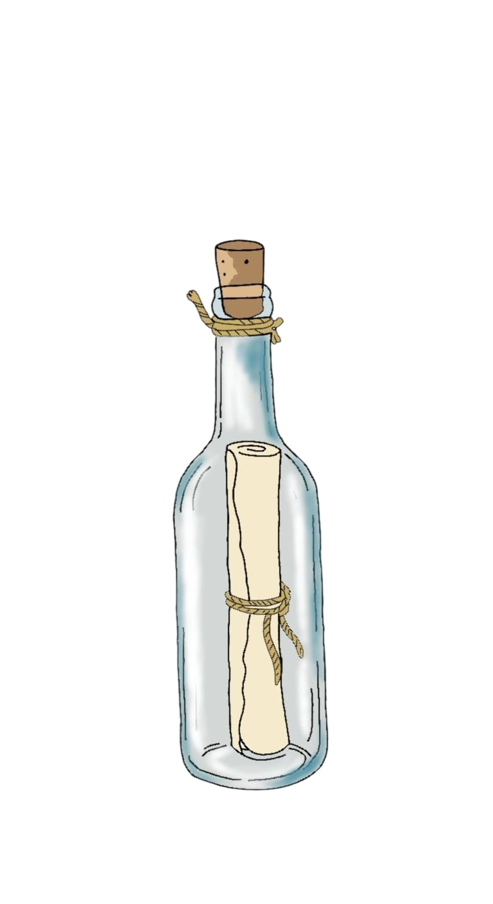

1Lanzaremos inicialmente en Steam (PC). Dependiendo del éxito de la campaña, planeamos ports para Switch y PlayStation.
¡Sí! La edición física especial está disponible como recompensa en el nivel de contribución de 100€ e incluirá la caja metálica.
Podrás adquirirla digitalmente en Steam o conseguir el CD físico exclusivo colaborando con 50€ o más.
El DLC "Abismo de Trikata" expande la historia con una nueva zona submarina, un jefe marino legendario y más puzles.
El juego tendrá textos en Español, Inglés y Francés. Si alcanzamos el objetivo de 550k€, ¡añadiremos doblaje completo!
Puedes escribirnos a hola@corailstudios.com o seguirnos en nuestras redes sociales al pie de esta página.